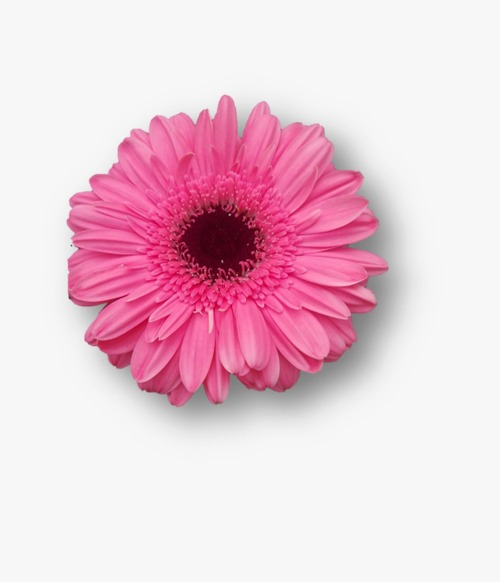
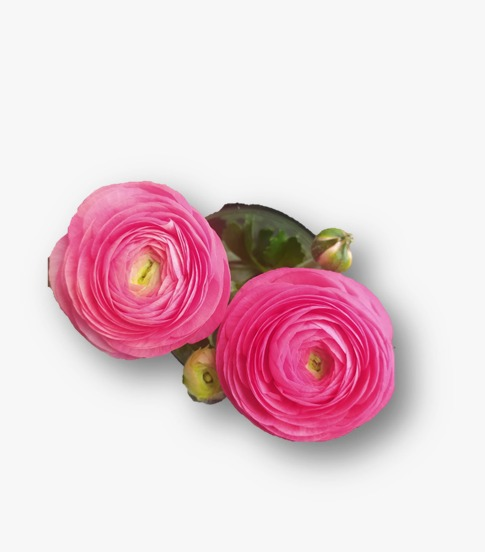
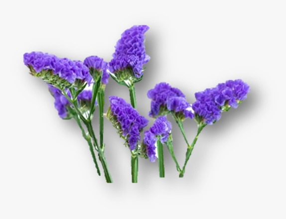
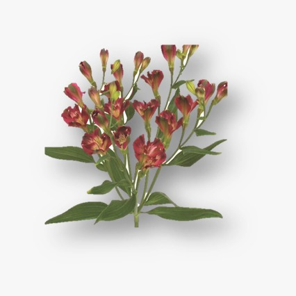
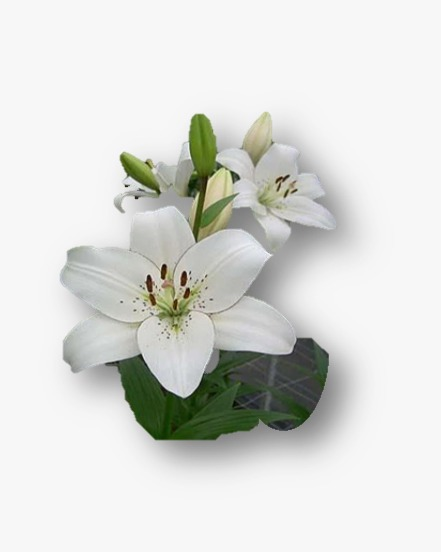
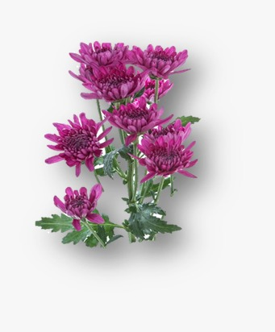

Flores
En esta selección te dejamos una información detallada a cerca de cada tipo de flor que se maneja.
Gerbera
La flor gerbera es una planta perenne que pertenece a la familia de las asteráceas, la misma que las margaritas. Tiene su origen en el sur de África, pero se ha adaptado a diferentes climas y regiones del mundo. Sus flores son grandes y vistosas, con muchos pétalos que pueden ser de diversos colores, como rojo, naranja, amarillo, rosa, blanco o morado. Su forma es similar a la de una margarita, pero con un centro más grande y prominente. Su floración se produce desde la primavera hasta el otoño, y sus flores tienen la particularidad de girar hacia el sol, buscando la mayor iluminación posible.
La gerbera es una planta muy apreciada por su valor ornamental, tanto para decorar interiores como exteriores. También se usa mucho como flor cortada, para elaborar ramos y arreglos florales. Además, tiene un significado simbólico de alegría, optimismo y vitalidad, y se asocia con los momentos felices de la vida. Según el color de sus flores, puede expresar diferentes sentimientos, como amor, amistad, admiración o gratitud.
Para cultivar y cuidar una gerbera, se deben tener en cuenta los siguientes aspectos:
- La gerbera requiere una buena iluminación, pero sin sol directo. Prefiere las temperaturas templadas, entre 15 y 25 ºC, y no resiste bien las heladas ni el calor extremo. Se recomienda protegerla de las corrientes de aire y de los cambios bruscos de temperatura.
- La gerbera necesita un riego moderado, manteniendo el suelo ligeramente húmedo, pero sin mojar las hojas ni las flores. Se debe regar por la mañana o por la tarde, evitando las horas de mayor sol. En invierno, se debe reducir el riego, dejando que el sustrato se seque entre riegos.
- La gerbera se beneficia de un abonado cada 15 días durante la época de floración, con un fertilizante específico para plantas de flor. Se debe aplicar el abono siguiendo las indicaciones del fabricante, y evitando el contacto directo con las raíces o las partes verdes de la planta.
- La gerbera requiere una poda regular, para eliminar las flores marchitas y las hojas secas o dañadas. Esto favorece el crecimiento de nuevas yemas y mejora el aspecto de la planta. También se puede realizar una poda de rejuvenecimiento al final del invierno, cortando los tallos a unos 10 cm del suelo.
- La gerbera es susceptible de sufrir el ataque de plagas, como los pulgones, las cochinillas o los ácaros, que pueden debilitar la planta y afectar las flores.

Ranunculo
La flor ranúnculo es una planta perenne que pertenece a la familia de las ranunculáceas, que comprende unas 400 especies de plantas. Su nombre científico es Ranunculus asiaticus, y su nombre común proviene del latín ranunculus, que significa pequeña rana, porque crece en zonas húmedas junto a estos anfibios. Su origen se sitúa en Asia y el este del Mediterráneo, y se ha extendido por Europa y otras regiones del mundo.
La flor ranúnculo se caracteriza por tener unas flores grandes y vistosas, con muchos pétalos que pueden ser de diversos colores, como rojo, naranja, amarillo, rosa, blanco o morado. Su forma es similar a la de una margarita, pero con un centro más grande y prominente. Su floración se produce desde la primavera hasta el otoño, y sus flores tienen la particularidad de girar hacia el sol, buscando la mayor iluminación posible.
La planta ranúnculo tiene unas raíces tuberosas, que reciben el nombre de garras o arañas, y unas hojas de color verde intenso, divididas en segmentos. Su altura puede variar de 20 a 60 cm, dependiendo de la variedad. Algunas de las variedades más conocidas son el ranúnculo asiático, el ranúnculo ácido, el ranúnculo ficaria y el ranúnculo arvense.
La flor ranúnculo tiene un significado simbólico de alegría, optimismo y vitalidad, y se asocia con los momentos felices de la vida. Según el color de sus flores, puede expresar diferentes sentimientos, como amor, amistad, admiración o gratitud. Es una planta muy apreciada por su valor ornamental, tanto para decorar interiores como exteriores. También se usa mucho como flor cortada, para elaborar ramos y arreglos florales.
Para cuidar una flor ranúnculo, se deben tener en cuenta los siguientes aspectos:
- La planta requiere una buena iluminación, pero sin sol directo. Prefiere las temperaturas templadas, entre 15 y 25 ºC, y no resiste bien las heladas ni el calor extremo. Se recomienda protegerla de las corrientes de aire y de los cambios bruscos de temperatura.
- La planta necesita un riego moderado, manteniendo el suelo ligeramente húmedo, pero sin mojar las hojas ni las flores. Se debe regar por la mañana o por la tarde, evitando las horas de mayor sol. En invierno, se debe reducir el riego, dejando que el sustrato se seque entre riegos.
- La planta se beneficia de un abonado cada 15 días durante la época de floración, con un fertilizante específico para plantas de flor. Se debe aplicar el abono siguiendo las indicaciones del fabricante, y evitando el contacto directo con las raíces o las partes verdes de la planta.
- La planta requiere una poda regular, para eliminar las flores marchitas y las hojas secas o dañadas. Esto favorece el crecimiento de nuevas yemas y mejora el aspecto de la planta. También se puede realizar una poda de rejuvenecimiento al final del invierno, cortando los tallos a unos 10 cm del suelo.
- La planta es susceptible de sufrir el ataque de plagas, como los pulgones, las cochinillas o los ácaros, que pueden debilitar la planta y afectar las flores.

Estatis
La flor estatis, también conocida como limonium, statice o siempreviva, es una planta perenne que pertenece a la familia de las plumbagináceas. Tiene su origen en las regiones costeras del Mediterráneo, Asia y África, y se ha adaptado a diferentes climas y suelos. Sus flores son pequeñas y numerosas, con forma de copa y colores que van desde el blanco al morado, pasando por el rosa, el amarillo y el naranja. Se agrupan en inflorescencias densas y ramificadas, que se elevan sobre unas hojas lanceoladas y coriáceas de color verde grisáceo. Su floración se produce desde la primavera hasta el otoño, y sus flores tienen la particularidad de conservarse muy bien como flor seca, manteniendo casi intacto su color y su forma.
La flor estatis tiene un significado simbólico de recuerdo, perdurabilidad y resistencia, y se asocia con los momentos difíciles de la vida. Según el color de sus flores, puede expresar diferentes sentimientos, como amor, amistad, admiración o gratitud. Es una planta muy apreciada por su valor ornamental, tanto para decorar interiores como exteriores. También se usa mucho como flor cortada, para elaborar ramos y arreglos florales. Además, se puede conservar como flor seca, para crear composiciones duraderas y originales.
Para cuidar una flor estatis, se deben tener en cuenta los siguientes aspectos:
- La planta requiere una buena iluminación, pero sin sol directo. Prefiere las temperaturas templadas, entre 15 y 25 ºC, y no resiste bien las heladas ni el calor extremo. Se recomienda protegerla de las corrientes de aire y de los cambios bruscos de temperatura.
- La planta necesita un riego moderado, manteniendo el suelo ligeramente húmedo, pero sin mojar las hojas ni las flores. Se debe regar por la mañana o por la tarde, evitando las horas de mayor sol. En invierno, se debe reducir el riego, dejando que el sustrato se seque entre riegos.
- La planta se beneficia de un abonado cada 15 días durante la época de floración, con un fertilizante específico para plantas de flor. Se debe aplicar el abono siguiendo las indicaciones del fabricante, y evitando el contacto directo con las raíces o las partes verdes de la planta.
- La planta requiere una poda regular, para eliminar las flores marchitas y las hojas secas o dañadas. Esto favorece el crecimiento de nuevas yemas y mejora el aspecto de la planta. También se puede realizar una poda de rejuvenecimiento al final del invierno, cortando los tallos a unos 10 cm del suelo.
- La planta es susceptible de sufrir el ataque de plagas, como los pulgones, las cochinillas o los ácaros, que pueden debilitar la planta y afectar las flores.

Estresia
La flor estresia, también conocida como fresia, freesia o fresilla, es una planta bulbosa que pertenece a la familia de las iridáceas. Tiene su origen en el sur de África, y se ha adaptado a diferentes climas y regiones del mundo. Sus flores son pequeñas y numerosas, con forma de copa y colores que van desde el blanco al morado, pasando por el rosa, el amarillo y el naranja. Se agrupan en inflorescencias densas y ramificadas, que se elevan sobre unas hojas lanceoladas y coriáceas de color verde grisáceo. Su floración se produce desde la primavera hasta el otoño, y sus flores tienen la particularidad de conservarse muy bien como flor seca, manteniendo casi intacto su color y su forma.
La flor estresia tiene un significado simbólico de recuerdo, perdurabilidad y resistencia, y se asocia con los momentos difíciles de la vida. Según el color de sus flores, puede expresar diferentes sentimientos, como amor, amistad, admiración o gratitud. Es una planta muy apreciada por su valor ornamental, tanto para decorar interiores como exteriores. También se usa mucho como flor cortada, para elaborar ramos y arreglos florales. Además, se puede conservar como flor seca, para crear composiciones duraderas y originales.
Para cuidar una flor estresia, se deben tener en cuenta los siguientes aspectos:
- La planta requiere una buena iluminación, pero sin sol directo. Prefiere las temperaturas templadas, entre 15 y 25 ºC, y no resiste bien las heladas ni el calor extremo. Se recomienda protegerla de las corrientes de aire y de los cambios bruscos de temperatura.
- La planta necesita un riego moderado, manteniendo el suelo ligeramente húmedo, pero sin mojar las hojas ni las flores. Se debe regar por la mañana o por la tarde, evitando las horas de mayor sol. En invierno, se debe reducir el riego, dejando que el sustrato se seque entre riegos.
- La planta se beneficia de un abonado cada 15 días durante la época de floración, con un fertilizante específico para plantas de flor. Se debe aplicar el abono siguiendo las indicaciones del fabricante, y evitando el contacto directo con las raíces o las partes verdes de la planta.
- La planta requiere una poda regular, para eliminar las flores marchitas y las hojas secas o dañadas. Esto favorece el crecimiento de nuevas yemas y mejora el aspecto de la planta. También se puede realizar una poda de rejuvenecimiento al final del invierno, cortando los tallos a unos 10 cm del suelo.
- La planta es susceptible de sufrir el ataque de plagas, como los pulgones, las cochinillas o los ácaros, que pueden debilitar la planta y afectar las flores.

Lirio asiático
El lirio asiático es una planta bulbosa que pertenece a la familia de las iridáceas. Tiene su origen en Asia y se ha adaptado a diferentes climas y regiones del mundo. Sus flores son grandes y vistosas, con forma de copa y colores que van desde el blanco al morado, pasando por el rosa, el amarillo y el naranja. Se agrupan en inflorescencias densas y ramificadas, que se elevan sobre unas hojas lanceoladas y coriáceas de color verde grisáceo. Su floración se produce desde la primavera hasta el otoño, y sus flores tienen la particularidad de girar hacia el sol, buscando la mayor iluminación posible.
El lirio asiático tiene un significado simbólico de pureza, inocencia y elegancia, y se asocia con los momentos especiales de la vida. Según el color de sus flores, puede expresar diferentes sentimientos, como amor, amistad, admiración o gratitud. Es una planta muy apreciada por su valor ornamental, tanto para decorar interiores como exteriores. También se usa mucho como flor cortada, para elaborar ramos y arreglos florales.
Para cuidar un lirio asiático, se deben tener en cuenta los siguientes aspectos:
- La planta requiere una buena iluminación, pero sin sol directo. Prefiere las temperaturas templadas, entre 15 y 25 ºC, y no resiste bien las heladas ni el calor extremo. Se recomienda protegerla de las corrientes de aire y de los cambios bruscos de temperatura.
- La planta necesita un riego moderado, manteniendo el suelo ligeramente húmedo, pero sin mojar las hojas ni las flores. Se debe regar por la mañana o por la tarde, evitando las horas de mayor sol. En invierno, se debe reducir el riego, dejando que el sustrato se seque entre riegos.
- La planta se beneficia de un abonado cada 15 días durante la época de floración, con un fertilizante específico para plantas de flor. Se debe aplicar el abono siguiendo las indicaciones del fabricante, y evitando el contacto directo con los bulbos o las partes verdes de la planta.
- La planta requiere una poda regular, para eliminar las flores marchitas y las hojas secas o dañadas. Esto favorece el crecimiento de nuevas yemas y mejora el aspecto de la planta. También se puede realizar una poda de rejuvenecimiento al final del invierno, cortando los tallos a unos 10 cm del suelo.
- La planta es susceptible de sufrir el ataque de plagas, como los pulgones, las cochinillas o los ácaros, que pueden debilitar la planta y afectar las flores.

Pompon
La flor pompon es un nombre común que se usa para referirse a varias plantas con flores que tienen forma de bola o de pompón. Algunas de estas plantas son el crisantemo, la dalia, el allium, el viburno, el cardo azul y la clavellina de mar. Estas plantas pertenecen a diferentes familias botánicas, pero comparten algunas características, como la abundancia de pétalos, el colorido variado y la floración prolongada. Las flores pompon son muy apreciadas por su valor ornamental, tanto para decorar jardines como para hacer ramos y arreglos florales. También se pueden conservar como flores secas, manteniendo su forma y su color.
Para cuidar una flor pompon, se deben tener en cuenta los siguientes aspectos generales:
- La planta requiere una buena iluminación, pero sin sol directo. Prefiere las temperaturas templadas, entre 15 y 25 ºC, y no resiste bien las heladas ni el calor extremo. Se recomienda protegerla de las corrientes de aire y de los cambios bruscos de temperatura.
- La planta necesita un riego moderado, manteniendo el suelo ligeramente húmedo, pero sin mojar las hojas ni las flores. Se debe regar por la mañana o por la tarde, evitando las horas de mayor sol. En invierno, se debe reducir el riego, dejando que el sustrato se seque entre riegos.
- La planta se beneficia de un abonado cada 15 días durante la época de floración, con un fertilizante específico para plantas de flor. Se debe aplicar el abono siguiendo las indicaciones del fabricante, y evitando el contacto directo con las raíces o las partes verdes de la planta.
- La planta requiere una poda regular, para eliminar las flores marchitas y las hojas secas o dañadas. Esto favorece el crecimiento de nuevas yemas y mejora el aspecto de la planta. También se puede realizar una poda de rejuvenecimiento al final del invierno, cortando los tallos a unos 10 cm del suelo.
- La planta es susceptible de sufrir el ataque de plagas, como los pulgones, las cochinillas o los ácaros, que pueden debilitar la planta y afectar las flores.
